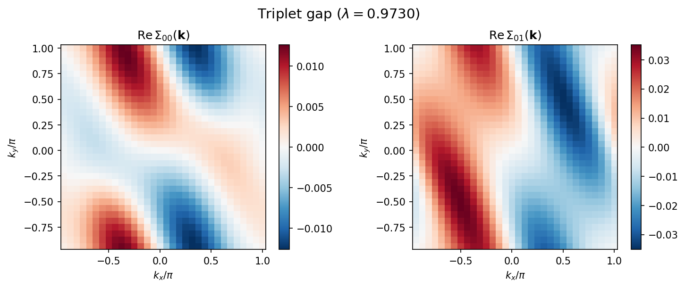
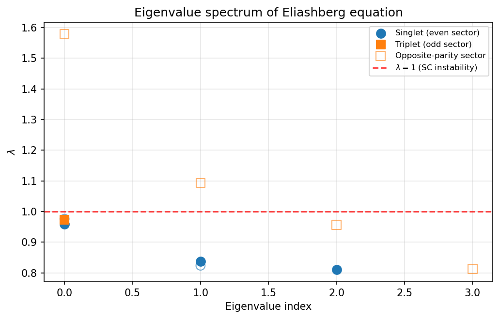

5.2. Tutorial: Eliashberg equation solver¶
This tutorial demonstrates how to use hwave_sc,
the linearized Eliashberg equation solver included in H-wave.
The tool analyzes superconducting instabilities by computing
the leading eigenvalue of the linearized Eliashberg equation
using the bare susceptibility \(\chi_0(\mathbf{q})\) from H-wave’s RPA solver.
The sample files for this tutorial are located in
docs/en/source/rpa/sample_sc directory.
5.2.1. Overview of the workflow¶
The calculation proceeds in two steps:
RPA calculation (
hwave): Compute the bare susceptibility \(\chi_0(\mathbf{q})\) and save it tochi0q.npz.Eliashberg solver (
hwave_sc): Loadchi0q.npz, reconstruct the Green’s function, compute RPA vertices, and solve the linearized Eliashberg equation.
5.2.2. Model¶
This tutorial uses a two-orbital tight-binding model on a two-dimensional square lattice at 3/4 filling. The Hamiltonian is:
with on-site Coulomb repulsion \(U = 0.4\) and inter-orbital Coulomb interaction \(V\).
This sample is based on the conduction layer model of the organic conductor \(\beta\)-(meso-DMBEDT-TTF)\(_2\)PF\(_6\), with transfer integrals obtained from extended Huckel calculations. [1]
5.2.3. Theory¶
Superconducting susceptibility¶
The RPA charge susceptibility \(\hat{X}^c\) and spin susceptibility \(\hat{X}^s\) are given by:
where \(\hat{X}^{(0)}\) is the bare susceptibility, \(\hat{U}\) the on-site interaction matrix, and \(\hat{V}\) the inter-site interaction matrix.
Linearized Eliashberg equation¶
The linearized Eliashberg equation for singlet superconductivity reads:
The pairing interaction for the singlet channel is:
For the triplet channel:
The superconducting transition corresponds to \(\lambda_S = 1\) (\(\lambda_T = 1\) for triplet). When \(\lambda > 1\), the normal state is unstable toward superconductivity. Note that only positive eigenvalues indicate SC instability; negative eigenvalues correspond to sign-changing gap functions but do not satisfy the self-consistency condition \(\Delta = K\Delta\).
hwave_sc implements two numerical methods to solve the Eliashberg equation:
self-consistent power iteration (converges to the mode with the largest eigenvalue)
and Arnoldi eigenvalue analysis.
5.2.4. Prepare input files¶
Parameter file¶
Create a TOML parameter file input.toml:
[log]
print_level = 1
[mode]
mode = "RPA"
[mode.param]
T = 0.1
CellShape = [32, 32, 1]
SubShape = [1, 1, 1]
Nmat = 512
filling = 0.75
[file]
[file.input]
path_to_input = "."
[file.input.interaction]
path_to_input = "."
Geometry = "geom.dat"
Transfer = "transfer.dat"
CoulombIntra = "coulombintra.dat"
CoulombInter = "coulombinter.dat"
[file.output]
path_to_output = "output"
chi0q = "chi0q"
chiq = "chiq"
[eliashberg]
solver_mode = "both"
chi0q_mode = "load"
pairing_type = "singlet"
init_gap = "cos"
max_iter = 500
alpha = 0.5
convergence_tol = 1.0e-5
num_eigenvalues = 10
eigenvalue_method = "arnoldi"
output_gap = "gap.dat"
output_eigenvalue = "eigenvalue.dat"
The file contains the following sections:
[mode.param] section¶
T: Temperature.CellShape: Size of the k-point mesh (32 x 32 x 1 for a 2D system).Nmat: Number of Matsubara frequencies (512).filling: Electron filling per orbital per spin (0.75 = 3/4 filling).
[file] section¶
[file.input.interaction]: Specifies files for geometry, transfer integrals, and interaction parameters. These files are shared with the RPA step.[file.output]: Output directory and filenames for \(\chi_0(\mathbf{q})\) and \(\chi(\mathbf{q})\).
[eliashberg] section¶
This section controls the Eliashberg solver. Key parameters:
solver_mode:"iteration"(self-consistent power iteration),"eigenvalue"(Arnoldi eigenvalue analysis), or"both".chi0q_mode:"load"reads \(\chi_0(\mathbf{q})\) from the RPA output file;"calc"computes it internally;"flex"reads the dressed susceptibilities from a FLEX run (required forfrequency = "dynamic").Note
"calc"recomputes \(\chi_0(\mathbf{q})\) with the parameters inmode.paramof this input file. For the result to be comparable with a"load"run, these must match the run that produced the chi0q file — in particularcoeff_tail(Matsubara high-frequency tail correction), which changes \(\chi_0(\mathbf{q})\) at \(O(1)\) for moderateNmat. Its defaultcoeff_tail = 0.0(no correction) can be poorly converged; production RPA/FLEX runs typically usecoeff_tail = 1.0. The chi0q file records the value it was produced with, andhwave_scwarns on a mismatch when loading.Warning
Inputs from a pre-fix
calc_scheme = "general"FLEX run. That path built its self-energy from an orbital-pair-transposed bubble, so itssigma.npzandgreen.npzare wrong off the orbital diagonal for a multi-orbital model.chi0q_mode = "flex"is not affected — it consumes the susceptibilities, which are not — butbond_greenis: it takes the FLEXgreen.npz, so regenerate that from a fixed build. Single-orbital runs and the"reduced"/"squashed"schemes are unaffected. See the migration warning.frequency: pairing-vertex frequency treatment."static"(default) evaluates the pairing vertex at zero bosonic frequency (the Nakano–Kuroki Eq. 9 static approximation) and gives a frequency-independent gap."dynamic"solves the full Matsubara-frequency-dependent Eliashberg equation with a frequency-dependent pairing vertex \(V(\mathbf{q}, i\omega_l)\) and gap \(\phi(\mathbf{k}, i\omega_n)\); it requireschi0q_mode = "flex"(see the dynamic-frequency section below).pairing_type:"singlet"or"triplet".init_gap: Initial gap symmetry for iteration. Options include"cos"(\(\cos(k_x+k_y+k_z)\)),"d_x2y2"(\(\cos k_x - \cos k_y\)),"random", etc. The full set of valid form factors is"cos","s","s_ext","s_ext_2d","d_x2y2","d_y2z2"(\(\cos k_y - \cos k_z\)),"d_xy","d_xz","d_yz","d_z2","p_x","p_y","p_z", and"random". For a quasi-two-dimensional cellCellShape = [1, Ny, Nz](\(k_x = 0\)) the seeds built from \(\sin k_x\) ("p_x","d_xy","d_xz") vanish identically; use"p_y"/"p_z"for the triplet channel, and"d_y2z2"— which has opposite-sign anti-nodes at \((\pi,0)\) and \((0,\pi)\), unlike the nodal"d_yz"that vanishes there — for the in-plane \(d\)-wave.max_iter: Maximum number of self-consistent iterations.alpha: Mixing parameter (0 = no mixing, 1 = full mixing of old solution).convergence_tol: Convergence criterion on the gap function.num_eigenvalues: Number of eigenvalues to compute in eigenvalue mode.eigenvalue_method:"arnoldi"(default),"subspace", or"shift-invert-gmres"/"shift-invert-bicgstab"/"shift-invert-lgmres".g2_tail: Apply the analytic Matsubara tail correction to the pair bubble \(G^{(2)}\) (defaulttrue; issue #86). The bare truncated frequency sum misses the leading identity tail (an \(O(1/N_{\rm mat})\) error) and can be slightly indefinite, which injects spurious imaginary parts into the reported eigenvalues at smallNmat. The correction is asymptotic: it helps when the largest retained frequency exceeds the relevant energy scales (the solver warns when the Green function still deviates strongly from its tail at the window edge – in that regime the correction can overshoot and passing the positivity check does not certify accuracy). Because the added term is the identity only at the pair-bubble stage – not a scalar shift of the assembled kernel – enabling it can legitimately change which eigenvalue leads or its distance from a shift-invert target; that is corrected physics, not a solver defect.falsereproduces results computed before the correction existed.sigma_shift(shift-inverteigenvalue_methodonly): the real target \(\sigma\) for the shift-invert eigensolver; eigenvalues near \(\sigma\) are found first. Ignored (with a warning) for the plain"arnoldi"method – usespectral_shiftthere instead.spectral_shift(eigenvalue_method = "arnoldi"only): a positive number, or"auto". The default ARPACK selection (which='LM') returns the eigenvalues of largest magnitude; far from a pairing instability, a small positive (attractive) leading eigenvalue can be masked by much larger negative (repulsive) eigenvalues, so the reported leading value comes out negative and unphysical. Settingspectral_shiftmakes the solver request the eigenvalue of largest real part (which='LR'; the physical SC eigenvalue, \(\lambda \to 1\) at \(T_c\)) on the shifted operator \(A + \sigma I\); the shift is subtracted internally, so the eigenvalues you receive/save are the true unshifted ones. Use"auto"to set \(\sigma\) from the spectral radius automatically, or give an explicit positive \(\sigma\) larger than the absolute value of the most negative eigenvalue (so \(A + \sigma I\) has an all-positive-real spectrum). Recommended whenever the leading eigenvalue comes out negative or you scan weakly-pairing systems (low pressure, quasi-1D). Note this differs fromsigma_shiftabove (a shift-invert target, not a spectral shift).gpu:trueruns the kernel-apply (matvec/matmat, the FFT convolution) on the GPU (CuPy) for bothfrequency = "dynamic"andfrequency = "static"(defaultfalse). The eigensolver itself (ARPACK Arnoldi, power iteration, subspace iteration, shift-invert) always runs on the host, because CuPy has no general non-Hermitian eigensolver; only the gap vector crosses to the device per iteration. Without a usable CuPy/CUDA device the run falls back to CPU with a warning (see the GPU-execution section below).fft_workersis ignored on the GPU path.gpu_required: Settrueto makegpu = truestrict – the solver raises instead of silently falling back to CPU when CuPy/CUDA is unavailable (defaultfalse). Honored by the dynamic Eliashberg solver (set it in[eliashberg]) and by the FLEX and RPA solvers (set it in[mode.param], alongside theirgpuflag).fft_workers: Number of FFT worker threads for the dynamic-mode spatial FFTs (default1= the serial numpy path, unchanged from previous releases;-1uses all cores; ignored on the GPU).matsubara_basis: Matsubara-axis representation of the dynamic mode:"uniform"(default, unchanged) or"ir"(the sparse-ir intermediate representation; see the IR section below).ir_tol: IR basis cutoff accuracy (default 1e-8).ir_wmax: real-frequency bandwidth of the IR basis, in the same energy units as the Hamiltonian (auto-estimated from the dispersion spectral rangemax|eps_k - mu|and the interaction scale when omitted; if the estimate cannot be formed, the solver fails fast and asks for an explicit value).ir_keep_static_chi:true/false(defaultfalse). When the spin/charge susceptibility is static-dominated (large and nearly frequency- independent within the sampled window, i.e. the near-critical regime), the frequency-independent component the IR compression would otherwise discard as the small \(O(\beta/N_\mathrm{mat})\) \(\delta(\tau)\) artifact instead carries physical weight; dropping it corrupts the leading eigenvalue. If that discarded component exceeds the data scale the solver aborts with guidance. Set this totrueto retain the static component instead of aborting (alternatively lowerir_wmaxor increase the FLEXNmat).
Interaction definition files¶
The interaction definition files use the Wannier90-like format, shared with the RPA solver. See Parameter files for details.
Geometry (geom.dat):
1.000000000000 0.000000000000 0.000000000000
0.000000000000 1.000000000000 0.000000000000
0.000000000000 0.000000000000 1.000000000000
2
0.000000000000000e+00 0.000000000000000e+00 0.000000000000000e+00
0.000000000000000e+00 5.000000000000000e-01 0.000000000000000e+00
Defines a unit cell with 2 orbitals.
Transfer (transfer.dat):
Transfer in wannier90-like format for uhfk
2
9
1 1 1 1 1 1 1 1 1
0 1 0 1 2 -0.082400000000 0.000000000000
0 -1 0 2 1 -0.082400000000 0.000000000000
0 0 0 1 2 -0.226000000000 0.000000000000
0 0 0 2 1 -0.226000000000 0.000000000000
-1 0 0 1 1 0.047500000000 0.000000000000
-1 0 0 2 2 0.047500000000 0.000000000000
1 0 0 1 1 0.047500000000 0.000000000000
1 0 0 2 2 0.047500000000 0.000000000000
-1 0 0 1 2 -0.043800000000 0.000000000000
1 0 0 2 1 -0.043800000000 0.000000000000
1 1 0 1 2 -0.115000000000 0.000000000000
-1 -1 0 2 1 -0.115000000000 0.000000000000
Defines the hopping integrals for the two-orbital model.
CoulombIntra (coulombintra.dat):
CoulombIntra in wannier90-like format for uhfk
2
1
1
0 0 0 1 1 0.400000000000 0.000000000000
0 0 0 2 2 0.400000000000 0.000000000000
On-site Coulomb repulsion \(U = 0.4\) on each orbital.
CoulombInter (coulombinter.dat):
CoulombInter in wannier90-like format for uhfk
2
9
1 1 1 1 1 1 1 1 1
0 1 0 1 2 0.096000000000 0.000000000000
0 -1 0 2 1 0.096000000000 0.000000000000
0 0 0 1 2 0.320000000000 0.000000000000
0 0 0 2 1 0.320000000000 0.000000000000
-1 0 0 1 1 0.204800000000 0.000000000000
-1 0 0 2 2 0.204800000000 0.000000000000
1 0 0 1 1 0.204800000000 0.000000000000
1 0 0 2 2 0.204800000000 0.000000000000
-1 0 0 1 2 0.096000000000 0.000000000000
1 0 0 2 1 0.096000000000 0.000000000000
1 1 0 1 2 0.204800000000 0.000000000000
-1 -1 0 2 1 0.204800000000 0.000000000000
Inter-orbital and inter-site Coulomb interactions.
5.2.5. Step 1: Run RPA calculation¶
First, compute the bare susceptibility by running the RPA solver:
$ hwave input.toml
This generates output/chi0q.npz and output/chiq.npz.
The RPA step takes a few seconds for a 32 x 32 mesh.
5.2.6. Step 2: Run Eliashberg solver¶
Next, run the Eliashberg equation solver using the same input file:
$ hwave_sc input.toml
The solver performs the following steps:
Loads \(\chi_0(\mathbf{q})\) from
output/chi0q.npz.Reads the interaction files and builds the Hamiltonian.
Constructs the non-interacting Green’s function \(G(\mathbf{k}, i\omega_n)\).
Computes the RPA charge and spin vertices \(V_c(\mathbf{q})\) and \(V_s(\mathbf{q})\).
Solves the linearized Eliashberg equation by self-consistent iteration and/or eigenvalue analysis.
The output log shows the iteration progress:
hwave_sc: === Self-consistent iteration ===
hwave_sc: Iteration 0: eigenvalue = 0.924446, diff = 3.544353e-01
hwave_sc: Iteration 1: eigenvalue = 0.817270, diff = 7.893848e-02
...
hwave_sc: Iteration 192: eigenvalue = 0.959725, diff = 9.900091e-06
hwave_sc: Converged at iteration 193
hwave_sc: Iteration result: eigenvalue = 0.959725, converged = True, n_iter = 193
followed by the eigenvalue analysis:
hwave_sc: === Eigenvalue analysis ===
hwave_sc: Leading eigenvalues:
hwave_sc: 0: 0.959725 (|ev| = 0.959725)
hwave_sc: 1: 0.836778 (|ev| = 0.836778)
hwave_sc: 2: 0.810959 (|ev| = 0.810959)
hwave_sc: 3: -0.887954 (|ev| = 0.887954)
hwave_sc: 4: -1.071303 (|ev| = 1.071303)
hwave_sc: 5: -1.349775 (|ev| = 1.349775)
hwave_sc: 6: 0.976353 (|ev| = 0.976353) [opposite-parity sector]
hwave_sc: 7: 0.823774 (|ev| = 0.823774) [opposite-parity sector]
...
An eigenvalue \(\lambda > 1\) (positive) indicates a superconducting instability at the given temperature. Negative eigenvalues correspond to sign-changing gap symmetries but do not indicate SC instability.
The eigenpairs are ordered so that those with the channel parity come first
(even for singlet, odd for triplet): the leading one (index 0) is the physical
solution and matches the self-consistent iteration result. Eigenvalues tagged
[opposite-parity sector] belong to the other parity sector; for a given
spin channel they are forbidden by the Pauli principle and do not represent
a physical instability (see the note on parity below). The last column of
eigenvalue.dat records this as match (1 = channel parity, 0 =
spurious).
5.2.7. Results¶
Gap function¶
The following figures show the gap function \(\Sigma_{\alpha\beta}(\mathbf{k})\) in momentum space obtained from the self-consistent iteration.
Singlet channel (\(\lambda \approx 0.96\)):

Fig. 5.3 Singlet gap function in k-space. Left: intra-orbital component \(\mathrm{Re}\,\Sigma_{00}(\mathbf{k})\). Right: inter-orbital component \(\mathrm{Re}\,\Sigma_{01}(\mathbf{k})\). The inter-orbital component is about 5 times larger than the intra-orbital one, indicating that inter-orbital pairing is dominant.¶
Triplet channel (\(\lambda \approx 0.97\)):
{kind=link}

Fig. 5.4 Triplet gap function in k-space. Left: intra-orbital component \(\mathrm{Re}\,\Sigma_{00}(\mathbf{k})\). Right: inter-orbital component \(\mathrm{Re}\,\Sigma_{01}(\mathbf{k})\). The gap is odd under \(\mathbf{k} \to -\mathbf{k}\) (with the orbital transpose), as required for spin-triplet pairing; the inter-orbital component is again the larger one.¶
Eigenvalue spectrum¶
The eigenvalue spectrum of the linearized Eliashberg equation is shown below for both singlet and triplet channels.
{kind=link}

Fig. 5.5 Positive eigenvalue spectrum \(\lambda\) of the linearized Eliashberg equation. The dashed red line indicates \(\lambda = 1\) (SC instability criterion). Filled markers are the physical eigenvalues (the gap has the channel parity: even for singlet, odd for triplet); open markers are spurious opposite-parity modes. All physical eigenvalues lie below 1. The two open markers above 1 are even-parity solutions of the triplet kernel, which the Pauli principle forbids for spin-triplet pairing (see the parity note below).¶
The Arnoldi eigenvalue analysis finds multiple eigenvalues. The figure shows only positive eigenvalues, which are relevant for the SC instability criterion \(\lambda = 1\). For the singlet channel, the leading physical (even-parity) eigenvalue is \(\lambda_S \approx 0.96 < 1\), matching the self-consistent iteration result, so there is no singlet SC instability at this temperature.
For the triplet channel, the leading physical (odd-parity) eigenvalue is \(\lambda_T \approx 0.97 < 1\). The larger values near \(1.58\) and \(1.09\) that appear in the triplet calculation are even-parity (spurious) modes and are not triplet instabilities. The two physical channels are thus very close (\(\lambda_T \gtrsim \lambda_S\)), placing this temperature near the singlet–triplet crossover; the actual SC transition (\(\lambda = 1\)) is reached at lower temperature.
Plotting script¶
The above figures can be reproduced using the plotting script included in the sample directory:
$ python plot_results.py
5.2.8. Output files¶
The solver produces the following files in the output directory:
gap.dat¶
The converged gap function \(\Delta_{\alpha\beta}(\mathbf{k})\) in k-space. Each line contains:
kx ky kz Re(Δ_00) Im(Δ_00) Re(Δ_01) Im(Δ_01) Re(Δ_10) Im(Δ_10) Re(Δ_11) Im(Δ_11)
where \(\alpha, \beta\) are orbital indices.
eigenvalue.dat¶
The eigenvalues of the linearized Eliashberg equation:
# Iteration eigenvalue
9.59724792e-01
# Eigenvalue analysis
# index Re(eigenvalue) Im(eigenvalue) |eigenvalue| match(1=channel-parity)
0 9.59725061e-01 -3.63739178e-12 9.59725061e-01 1
1 8.36778019e-01 -3.64670431e-12 8.36778019e-01 1
...
The trailing match column is 1 when the eigenvector has the channel’s
parity (a physical singlet/triplet gap) and 0 for a spurious opposite-parity
mode (see the parity note above). Older output files without this column are
read unchanged.
5.2.9. Physical interpretation¶
The leading eigenvalue \(\lambda\) of the linearized Eliashberg equation determines whether superconductivity emerges:
\(\lambda > 1\): The normal state is unstable toward superconductivity. The corresponding eigenvector gives the symmetry of the gap function.
\(\lambda < 1\) (for all positive eigenvalues): The normal state is stable at this temperature.
Negative eigenvalues correspond to sign-changing gap functions (such as \(s_\pm\)-wave in multi-orbital systems), but they do not indicate SC instability regardless of their magnitude. The self-consistency condition \(\Delta = K\Delta\) requires \(\lambda = 1\) (not \(\lambda = -1\)).
By varying the temperature and finding the point where the largest positive eigenvalue reaches \(\lambda = 1\), one can determine the superconducting transition temperature \(T_c\).
In this example, at \(T = 0.1\) both physical channels are just below the instability threshold, with \(\lambda_S \approx 0.96\) (singlet, even) and \(\lambda_T \approx 0.97\) (triplet, odd). They are nearly degenerate, with the triplet marginally leading.
Note
Parity and the Pauli principle.
A Cooper pair must be antisymmetric under exchange of the two electrons,
i.e. under the combined operation of spin exchange, orbital exchange, and
\(\mathbf{k} \to -\mathbf{k}\). For an (even-frequency) gap
\(\Sigma_{\alpha\beta}(\mathbf{k})\) this fixes the spatial parity
\(P:\ \Sigma_{\alpha\beta}(\mathbf{k}) \to \Sigma_{\beta\alpha}(-\mathbf{k})\):
spin-singlet gaps are even (\(P = +1\)) and spin-triplet gaps are
odd (\(P = -1\)). The Eliashberg kernel acts on the full gap space and
is not restricted to one parity, so each channel’s kernel also has
opposite-parity eigenvectors. These are mathematical solutions with no
physical meaning for that spin channel (e.g. an even-parity eigenvalue of the
triplet kernel would be a totally symmetric pair state, forbidden by Pauli).
hwave_sc therefore projects each self-consistent iterate onto the
channel’s parity sector, and the eigenvalue analysis labels each mode as
physical (match = 1) or spurious (match = 0). The large values
\(\lambda \approx 1.58,\ 1.09\) seen in the triplet calculation are such
spurious even-parity modes, not triplet instabilities.
Singlet vs. triplet comparison¶
By changing pairing_type to "triplet" in the input file,
one can compare the singlet and triplet channels.
When switching to the triplet channel, init_gap must also be set to an
odd-parity (triplet) seed such as "p_x" (the ready-made
input_triplet.toml does this); the default init_gap = "cos" is an even
(singlet) seed, and the solver now rejects a seed of the wrong parity with an
error rather than converging to an unphysical sector. Equivalently, omit
init_gap entirely to let the solver pick the channel’s parity automatically.
At \(T = 0.1\) with the same parameters, the leading physical eigenvalues are
\(\lambda_T \approx 0.97\) (triplet) and \(\lambda_S \approx 0.96\)
(singlet): both are below 1, and the triplet marginally leads. This places the
sample near the singlet–triplet crossover of Ref. [1], where the triplet SC
state competes with the singlet for \(T > 0.05\), while the singlet SC
transition dominates at lower temperatures (\(T < 0.05\)) due to the
enhancement of spin fluctuations. The actual transition
(\(\lambda = 1\)) is reached on lowering the temperature.
5.2.10. Dynamic (frequency-dependent) Eliashberg equation¶
By default hwave_sc solves the Eliashberg equation in the static
approximation: the pairing vertex is evaluated at zero bosonic Matsubara
frequency (the Nakano–Kuroki Eq. 9 static approximation) and the gap
\(\Sigma(\mathbf{k})\) carries no frequency dependence. Setting
frequency = "dynamic" in the [eliashberg] section instead solves the
full frequency-dependent linearized Eliashberg equation,
keeping the full fermionic Matsubara axis of the gap \(\phi(\mathbf{k}, i\omega_n)\) together with a frequency-dependent pairing vertex \(V(\mathbf{q}, i\omega_l)\). The vertex is applied as an imaginary-time product (not as a static prefactor), so the kernel couples different Matsubara frequencies.
FLEX prerequisite¶
The dynamic mode needs frequency-resolved input that only the FLEX solver
produces, so it must be run with chi0q_mode = "flex". Before calling
hwave_sc you must run a FLEX calculation (mode = "FLEX") that writes,
into the directory read by the Eliashberg step:
chiq_s.npzandchiq_c.npz– the spin and charge susceptibilities on the full bosonic Matsubara axis (allNmatfrequencies), andgreen.npz– the dressed Green’s function \(G(\mathbf{k}, i\omega_n)\), from which the pair bubble is built.
Note
The FLEX susceptibility files carry a chi_convention tag ("kuroki"
for the reduced/squashed schemes, "myo" for the general full-vertex
scheme) that the Eliashberg loader uses to interpret their orbital layout.
For two-orbital systems (norb = 2) the reduced spin-orbital
dimension and the orbital-pair dimension coincide (both 4), so this tag
is what distinguishes them. H-wave versions before this fix inferred the
layout from shape alone and mislabeled a norb = 2 reduced (kuroki) chi
as orbital-pair, corrupting the pairing vertex; Eliashberg eigenvalues and
gap functions for such runs are corrected (and therefore change) in this
version. Single-orbital and general (myo) results are unaffected.
Warning
Results may change for multi-orbital reduced/squashed FLEX runs. The matrix index of a reduced (kuroki) susceptibility is a density pair: the stored \(X[a,b]\) is \(\chi_{(a,a),(b,b)}\). Earlier versions embedded it into the \(n_\text{orb}^2\) orbital-pair space as \(\text{out}[(l_1,l_2),(l_3,l_2)] = X[l_1,l_3]\), which dropped the inter-orbital density coupling \(\chi_{(0,0),(1,1)}\) – a component the pairing vertex \(S \chi S\) genuinely references – and scattered \(X\) onto pair indices the reduced scheme never computed. This version embeds it correctly, as \(\text{out}[(a,a),(b,b)] = X[a,b]\) with every other component zero.
Consequently, static and dynamic chi0q_mode = "flex" results change
for runs with norb >= 2 whose FLEX used calc_scheme = "reduced" or
"squashed". Two independent effects contribute, so a vanishing
inter-orbital density component is not enough to be safe: the old placement
both dropped \(\chi_{(a,a),(b,b)}\) with \(a \neq b\), and – when
the interaction reaches the off-density blocks – fabricated dressing there
out of the diagonal \(\chi_{(a,a),(a,a)}\). Treat every such stored
eigenvalue and gap function as needing recomputation. Single-orbital (norb = 1) results are bit-identical
(both placements coincide), as are all general (myo) results. With the fix,
a CoulombIntra-only reduced run reproduces the equivalent
chi0q_mode = "load" and general-scheme results exactly for identical
:math:`Sigma = 0` physics (FLEX with Mix = 0, IterationMax = 1);
before the fix it did not. This is a statement about the pairing vertex
only. It does not imply the two schemes are interchangeable at full
self-consistency, where they also differ in how the self-energy is built.
As of this version, IR-native susceptibility files (write_densified =
false) must carry this chi_convention tag, and the loader also
rejects a chi_convention that contradicts the tensor’s shape-inferred
layout, failing fast with an explicit message instead of silently building
a wrong pairing vertex. Files written by current H-wave always carry a
consistent tag, so this only affects hand-edited or externally produced
susceptibility files.
Nmat must be even and must match between the FLEX output and the
[mode.param] value. If frequency = "dynamic" is requested without
chi0q_mode = "flex", with an odd Nmat, or without a dressed
green.npz, the solver aborts with an explanatory error rather than falling
back silently. The FLEX output directory can be selected with
[file.input] path_to_flex_output (default: the [file.output]
directory), and the individual filenames overridden with the [eliashberg]
keys flex_chi_s / flex_chi_c / flex_green.
Outputs¶
In addition to eigenvalue.dat (the leading \(\lambda\)), the dynamic
mode writes:
gap_dynamic.npzThe full frequency-resolved gap and its metadata. Keys:
gap: complex array of shape(norb, norb, Nx, Ny, Nz, Nmat)– \(\phi_{\alpha\beta}(\mathbf{k}, i\omega_n)\).iomega: the centered fermionic Matsubara frequencies \(\omega_n = (2n + 1 - N_{\mathrm{mat}})\pi T\).T: temperature.pairing_type:"singlet"or"triplet".frequency:"dynamic".eigenvalue: the leading \(\lambda\).axis_order:"(orb1, orb2, kx, ky, kz, iomega)".normalization: the gauge convention – the gap is L2-normalized over all components and its largest-magnitude component is rotated real-positive, so the stored gap is reproducible across runs and linear-algebra backends.
gap.datA single-frequency slice of the gap at the lowest positive Matsubara frequency (index
Nmat//2), in the same column layout as the staticgap.dat(kx ky kzthenRe/Imper orbital pair). Its first line is a#-prefixed header carryingfrequency=dynamictogether with the slice index and its \(\omega_n\).
Channel-parity selection¶
Like the static solver, the dynamic mode reports the leading eigenpair of the
requested pairing channel, not merely the algebraically largest eigenvalue.
Fermion antisymmetry fixes the combined parity of the gap under
\(\phi_{\alpha\beta}(\mathbf{k}, i\omega_n) \to
\phi_{\beta\alpha}(-\mathbf{k}, -i\omega_n)\): even for singlet (this admits
both a conventional even-frequency and an odd-frequency singlet) and odd for
triplet. The Arnoldi eigenpairs are reordered so that the channel-parity
mode leads, and the per-eigenvalue table in eigenvalue.dat carries the same
trailing match(1=channel-parity) column as the static output (1 in the
requested sector, 0 in the opposite one). If none of the num_eigenvalues
computed eigenpairs lies in the requested sector, the solver warns and falls
back to the raw leading pair; increase num_eigenvalues or check
pairing_type in that case. The power-iteration path (solver_mode =
"iteration") likewise projects every iterate onto the channel sector when the
kernel commutes with parity (a centrosymmetric model); if it does not, the
projection is disabled with a warning and the un-projected iteration is used.
Channel decomposition (diagnostic)¶
The pairing vertex is a sum of a spin-fluctuation, a charge-fluctuation, and an instantaneous bare term. For the singlet and triplet channels,
both of which are linear in the spin (\(\chi_{\mathrm s}\)) and charge
(\(\chi_{\mathrm c}\)) susceptibilities (only the coefficients and the bare
term differ). The decomposition therefore applies to either pairing_type.
Two optional booleans in the [eliashberg] section zero one channel before
the vertex is built, to attribute the pairing strength to spin vs. charge
fluctuations:
zero_chi_c(defaultfalse): zero \(\chi_{\mathrm c}\); the vertex keeps the spin-fluctuation term plus the bare term (spin channel).zero_chi_s(defaultfalse): zero \(\chi_{\mathrm s}\); the vertex keeps the charge-fluctuation term plus the bare term (charge channel).
Note
These flags apply only to the dynamic vertex (frequency = "dynamic").
The static solver (frequency = "static", the default) builds its kernel
from the RPA/FLEX static susceptibility and does not use them when
constructing the kernel; setting one with frequency = "static" has no
effect and logs a warning.
For example, a spin-channel diagnostic uses:
[eliashberg]
zero_chi_c = true
Only the dynamic susceptibility function is zeroed; the static interaction
matrices \(\hat S\) and \(\hat C\) in the bare term are not changed.
Setting both to true leaves only the instantaneous bare vertex. Both default
off, so a production run is unaffected, and each zeroed channel logs a warning.
These are diagnostics: the instantaneous bare term is retained in every case,
and because the linearized-gap eigenvalue problem is nonlinear in the vertex, the
eigenvalues from separately zeroed runs are not additive
(\(\lambda_{\mathrm s} + \lambda_{\mathrm c} \neq \lambda_{\mathrm{full}}\)
in general).
Enabled flags are recorded in gap_dynamic.npz, gap.dat, and
eigenvalue.dat. Keep both flags off for production runs.
Eigenvector continuation (seed_eigenvector)¶
The reported leading eigenpair is normally the algebraically largest one. For a
frequency-dependent (non-Hermitian) kernel this can be fragile near an
exceptional point — where two real eigenvalues collide and split into a
complex-conjugate pair — so the “leading” branch may jump discontinuously
between neighbouring temperatures even when the FLEX self-energy varies
smoothly. To follow one physical branch, set [eliashberg] seed_eigenvector
to a gap_dynamic.npz written by a neighbouring run (e.g. the next-higher
temperature): its gap is used as the ARPACK start vector and to select the
eigenpair whose eigenvector maximally overlaps it, rather than the largest one.
Stepping temperature down and feeding each run the previous gap_dynamic.npz
tracks the same gap symmetry (e.g. the d-wave mode) continuously. The seed must
share the run’s CellShape and Nmat (a mismatch is a fail-fast error), so
keep Nmat fixed across a continuation sweep; on the IR path the seed gap is
refit onto the IR nodes automatically. [eliashberg] sigma_shift sets an
explicit shift-invert target (otherwise estimated from a preliminary Arnoldi);
combining sigma_shift near the branch with seed_eigenvector is the most
robust way to resolve a masked or complexifying eigenvalue.
Temperature continuation (hwave_tsweep)¶
Chaining sigma_init and seed_eigenvector by hand across a temperature
sweep, as described above, means re-running hwave/hwave_sc once per
temperature and wiring each step’s output into the next step’s input. The
hwave_tsweep command (installed alongside hwave and hwave_sc)
automates this: given one base TOML – the same
[mode]/[mode.param]/[file]/[eliashberg] configuration used
for a single FLEX+Eliashberg run – plus a [continuation] section, it
runs FLEX (and, unless disabled, the Eliashberg solver) across a descending
ladder of temperatures. At each rung it feeds the previous rung’s converged
self-energy into this rung’s FLEX via sigma_init (warm start) and the
previous rung’s dynamic gap into this rung’s Eliashberg solve via
seed_eigenvector (eigenvector continuation) – automating the whole
warm-start chain so a single physical branch is tracked smoothly down to low
temperature instead of being cold-started, and potentially landing on a
different metastable solution, at every point.
Only mode.param.T is varied between rungs; CellShape, Nmat, and
every other shape-determining field are held fixed across the ladder, which
is what keeps each rung’s sigma_init/seed_eigenvector files
shape-compatible with the next rung.
The [continuation] section¶
[continuation]
temperatures = [0.02, 0.015, 0.01, 0.008, 0.006] # explicit ladder
# or, if `temperatures` is absent, a generated ladder:
# T_start = 0.02
# T_stop = 0.006
# num = 5
# spacing = "linear" # "linear" (default) or "log"
output_dir = "tsweep" # default
run_eliashberg = true # default
warm_start = true # default
seed_gap = true # default
resume = false # default; or pass --resume
summary_file = "lambda_vs_T.dat" # default
temperatures: an explicit list of temperatures, run in the order given. If present it takes precedence overT_start/T_stop/num.T_start/T_stop/num/spacing: used to generate the ladder whentemperaturesis absent –numpoints betweenT_startandT_stop, withspacing"linear"(default) or"log". Supplying neithertemperaturesnor theT_start/T_stop/numtriple is a pre-flight error.output_dir(default"tsweep"): the parent directory for the sweep. Rungidxat temperatureTwrites to<output_dir>/<idx>_T<T>/output/(idxzero-padded to 3 digits,T%g-formatted).run_eliashberg(defaulttrue): also run the Eliashberg solver at each rung. This requires the base TOML to already have an[eliashberg]section – pre-flight raises an error otherwise, naming the missing section. Set tofalseto run a FLEX-only sweep that chains onlysigma_init.warm_start(defaulttrue): chain each rung’s converged self-energy into the next rung’ssigma_init.seed_gap(defaulttrue): chain each rung’s gap into the next rung’sseed_eigenvector. This is only active for the dynamic Eliashberg solver ([eliashberg] frequency = "dynamic"); for a static ladder it has no effect, sinceseed_eigenvectoritself is dynamic-only.summary_file(default"lambda_vs_T.dat"): filename of the summary table written to<output_dir>/<summary_file>.
Running the sweep¶
$ hwave_tsweep input.toml
Three flags control the run:
--dry-run: resolve and print the temperature ladder, each rung’s output directory, and thesigma_init/seed_eigenvectorpaths that would be wired up – without invoking either solver. Use this to validate a[continuation]config before committing to a long sweep.--keep-going: by default a rung whose solver raises an error stops the sweep (a broken rung would otherwise poison every downstream seed, and the partial summary is still written); with--keep-goingthe next rung is instead cold-started, and if it succeeds it becomes the seed for subsequent rungs again. This is error continuation within one process, not a restart after the process itself was interrupted.--resume(or[continuation] resume = true): job-level restart. When a sweep is rerun with resume,hwave_tsweepskips the longest contiguous prefix of already-completed, seedable rungs and restarts at the first incomplete one – seeded from the last valid rung’ssigmaand dynamic gap, exactly as if the sweep had never stopped. Use it after a wall-clock/scheduler kill, a crash, or a manual interrupt.A rung counts as completed only when its recorded summary row is non-error and its on-disk outputs are actually present and parseable (a half-written or corrupt
eigenvalue.datis detected and that rung, plus every rung after it, is recomputed). Resume is guarded by a small manifest (tsweep_manifest.json, written on the first run) recording the resolved ladder and a fingerprint of the shape/physics configuration (CellShape/SubShape/Nmat/filling/Ncond/interaction files/[eliashberg]frequency/pairing). Resuming against a different ladder or configuration fails fast rather than mixing incompatible results. The summary and manifest are written atomically after every rung, so an interruption can never leave a truncated checkpoint. Without--resumea rerun starts fresh and overwrites the existing sweep rung-by-rung (a warning is logged when it detects an existing sweep).
The three are distinct: warm start (warm_start/seed_gap) chains
one rung’s result into the next rung’s seed within a single run;
–keep-going decides what happens after a rung errors within one run;
–resume decides what happens when a whole run is restarted.
Summary file¶
Each run writes <output_dir>/<summary_file> (default
tsweep/lambda_vs_T.dat), one row per rung:
# idx T status error_stage Re_lambda Im_lambda parity_match flex_converged flex_iter
0 0.02 ok none 0.845000 0.000000 1 1 18
1 0.015 ok none 0.902000 0.000000 1 1 22
2 0.01 error flex nan nan -1 0 -1
...
status is one of:
ok– FLEX converged and, ifrun_eliashberg, the leading eigenpair was parsed from this rung’seigenvalue.dat.not_converged– FLEX ran toIterationMaxwithout meetingEPS, but still wrote a usable self-energy (and gap, if Eliashberg ran); such a rung is still eligible to seed the next one.error– a solver raised, or (withrun_eliashberg)eigenvalue.datwas missing or unparseable;error_stagethen records which solver failed (flexoreliashberg).dry– a row produced by--dry-run; no solver was invoked.
Missing floats (Re_lambda/Im_lambda when Eliashberg did not run or
failed) print as nan; missing integer fields (parity_match,
flex_converged, flex_iter) print as -1. error_stage is
none unless status = error.
Example¶
[mode]
mode = "FLEX"
[mode.param]
T = 0.02
CellShape = [32, 32, 1]
Nmat = 512
filling = 0.75
[file]
[file.input]
path_to_input = "."
[file.input.interaction]
path_to_input = "."
Geometry = "geom.dat"
Transfer = "transfer.dat"
CoulombIntra = "coulombintra.dat"
CoulombInter = "coulombinter.dat"
[file.output]
path_to_output = "output"
[eliashberg]
frequency = "dynamic"
chi0q_mode = "flex"
pairing_type = "singlet"
solver_mode = "eigenvalue" # required by hwave_tsweep pre-flight
[continuation]
T_start = 0.02
T_stop = 0.005
num = 6
spacing = "log"
run_eliashberg = true
warm_start = true
seed_gap = true
Note
With CoulombInter and no explicit calc_scheme, this example runs the
default reduced scheme, so the Eliashberg step will print the
approximation warning described in
Supported interactions. That is expected here and
not a misconfiguration: reduced supports the general off-site
CoulombInter this workflow uses, whereas general accepts off-site
entries only for same-orbital CoulombInter without sublattice folding
(and on-site terms otherwise). Use general when your interactions
allow it and you need the inter-orbital channels dressed as well.
This descends from \(T = 0.02\) to \(T = 0.005\) over 6
log-spaced rungs, running FLEX + dynamic Eliashberg at each, chaining both
sigma_init and seed_eigenvector, and writing
tsweep/lambda_vs_T.dat – a \(\lambda(T)\) table from which
\(T_c\) can be estimated as the point where the leading physical
eigenvalue crosses 1.
Memory note¶
The dynamic solver stores several full-frequency tensors (the pairing vertex,
the pair bubble, and the gap), so its peak memory scales roughly as
\(\mathcal{O}(N_{\mathrm{orb}}^4\, N_k\, N_{\mathrm{mat}})\) and grows
quickly with the orbital count, k-mesh, and number of Matsubara frequencies.
Before allocating, hwave_sc estimates the peak requirement and aborts if it
would exceed the limit; set [eliashberg] mem_limit_gb to cap it explicitly
(0 disables the guard), otherwise a fraction of the available RAM is used.
The estimate reads the stored Nmat (the Matsubara-frequency axis) from the
on-disk file headers (chiq_s.npz / chiq_c.npz / green.npz) rather
than trusting only the configured value, so a file whose stored Nmat differs
from the configuration is rejected up front (before allocation) instead of
causing an out-of-memory crash mid-load. (The k-mesh and orbital count are taken
from the configuration; a mismatch there surfaces as a reshape error from the
loader.)
Performance note¶
The eigenvalue solve is dominated by repeated applications of the kernel. Two
optimizations keep this cheap: the vertex’s imaginary-time transform (the
kernel’s most expensive step) is precomputed once instead of on every matvec,
and the spatial FFTs are run in parallel via scipy.fft. [eliashberg]
fft_workers sets the number of FFT worker threads: 1 (default) keeps the
serial numpy path unchanged from previous releases, -1 uses all cores
(opt-in); set a smaller number (e.g. matching OMP_NUM_THREADS) when running
several dynamic solves concurrently to avoid oversubscribing the CPU. Together
these give roughly a 4x speedup at norb = 2, N_k = 1024,
N_{mat} = 1024. On the GPU (gpu = true) the FFTs already run on the
device and fft_workers is ignored.
IR-basis (sparse-ir) compression of the Matsubara axis¶
matsubara_basis = "ir" replaces the dynamic mode’s uniform Matsubara grid
(Nmat points) by the sparse sampling nodes of the intermediate
representation (IR) basis – typically 50-100 nodes, improving with lower
temperature. Requires the optional
sparse-ir package
(pip install sparse-ir). The kernel, the eigen-iteration, and the parity
filtering all run on the sparse nodes, cutting the frequency-axis memory and
compute by Nmat/L (20-40x). Note that Nmat keeps its role: the
preceding FLEX run still produces (and must converge on) the uniform
Nmat grid that the IR loader reads, and the outputs below are densified
back onto it – IR compresses the dynamic solver’s INTERNAL frequency axis,
whose node count is set by beta * ir_wmax and ir_tol, not by
Nmat. Composes with GPU execution (gpu = true, which still requires
CuPy; fft_workers keeps its meaning for the CPU spatial FFTs and is
ignored on the GPU).
Outputs (gap_dynamic.npz / gap.dat) are densified back to the uniform
grid, so downstream analysis works unchanged (the npz gains provenance
metadata such as matsubara_basis).
When the FLEX run itself uses [mode.param] matsubara_basis = "ir" with
write_densified = false (IR-native output files, recognizable by their
frequency_grid = "sparse_ir_nodes" key), the dynamic solver with
matsubara_basis = "ir" consumes them directly: the stored node values
are used as-is when the node sets coincide (the common case), or refit onto
this run’s basis otherwise (logged, with a residual check). The temperature
must match the FLEX run (a mismatch is an error — the susceptibilities are
physics input). With matsubara_basis = "uniform", IR-native inputs are
rejected with an explicit error; either switch this solver to "ir" or
re-run FLEX with write_densified = true.
Note
FLEX outputs computed on the uniform FFT grid (chiq_s.npz etc.) carry
O(beta/Nmat) discretization artifacts (a delta(tau)-derived constant
offset plus aliasing images). The IR loader isolates and discards the
constant when it is small (logged); if the fitted constant is
COMPARABLE to the data scale it cannot be the discretization artifact,
and the run stops with an error instead of silently corrupting the
result (remedies, also printed by the error: use the automatic
ir_wmax or a value near 3*(bandwidth + max interaction);
increase the FLEX Nmat; set ir_keep_static_chi = true to
retain a genuinely static component; or fall back to
matsubara_basis = "uniform"). The eigenvalue difference between
the IR and uniform paths is bounded by this input-data quality
(measured ~1.5e-2 relative at Nmat=128 and ~4e-3 at Nmat=512
on the small test fixture with the dispersion-based automatic
ir_wmax; these numbers are fixture-specific, not a general
guarantee); both converge to the same continuum limit as Nmat
grows. For production use, validate once per model: raise the FLEX
Nmat (or compare a uniform run against the IR run at the same
Nmat) and check that the leading eigenvalue shift is within your
tolerance.
Warning
Dynamic IR results computed with H-wave versions BEFORE the issue-#57
fix are incorrect for any model whose pairing vertex has a nonzero
frequency-independent part — in particular anything with off-site
CoulombInter (pure on-site-CoulombIntra models were
unaffected: their bare vertex term cancels exactly). Recompute such
runs; large changes in lambda are expected (they were the bug, not a
physics change). The automatic ir_wmax estimate also changed to a
dispersion-based bound and is now much smaller (and correct) on
realistic multi-hopping models.
GPU execution (CuPy)¶
Setting gpu = true in the [eliashberg] section runs the dynamic-mode
kernel applications (the eigensolver’s matvec) on a GPU. The two large
invariant tensors (the pair bubble \([GG]\) and the pairing vertex) are
moved to the device once before the iteration starts; each iteration then only
transfers the gap vector. The result is numerically identical to the CPU run
(within double-precision round-off).
Applies to
frequency = "dynamic"only. The static solver is CPU-only, so settinggpu = truewithfrequency = "static"(or omitted, which defaults to static) fails fast with aValueErrorrather than silently ignoring the flag.Requires CuPy and a usable CUDA device. When CuPy is missing or no device is found, the solver warns and falls back to the CPU (numpy) path automatically – same result, only slower.
gpu_required = true(defaultfalse) turns the silent CPU fallback into a hard error: ifgpu = trueis requested but no usable CuPy/CUDA backend exists, the solver raises instead of quietly running on the CPU, so a large scheduler job fails fast rather than turning a short GPU run into a very long CPU run. The same flag is honored by the FLEX and RPA solvers.Before the large device allocation, the FLEX and RPA GPU paths run an advisory VRAM preflight: if the estimated resident tensors exceed the free device memory, they log a warning naming the solver and the estimated/free amounts (CuPy still raises a hard out-of-memory error on the actual allocation).
The GPU memory requirement is roughly the two resident tensors, \(2 \times 16\, N_{\mathrm{orb}}^4\, N_k\, N_{\mathrm{mat}}\) bytes, plus workspace; if it does not fit, CuPy aborts with an explicit out-of-memory error.
Reference point: \(N_{\mathrm{orb}}=2\), a \(64\times 64\) k-mesh, and \(N_{\mathrm{mat}}=2048\) give roughly a 16x per-matvec speedup over the CPU path (NVIDIA RTX 6000 Ada, about 5 GB of GPU memory).
5.2.11. Supported interactions¶
The Eliashberg solver supports all interaction types available in H-wave:
CoulombIntra(\(U\)): Intra-orbital Coulomb repulsionCoulombInter(\(V\)): Inter-orbital Coulomb repulsionHund(\(J\)): Hund’s couplingExchange(\(J'\)): Pair-hopping (exchange)Ising(\(I\)): Ising-type spin interactionPairHop(\(P\)): Pair hopping
For systems with Hund, Exchange, Ising, or PairHop
interactions, the solver automatically uses the generalized
\(S\)/\(C\) matrix formulation (Kuroki et al., PRB 79, 224511)
with four-index vertex structure.
Note
Caveat for chi0q_mode = "flex" with a reduced/squashed FLEX run.
A reduced (calc_scheme = "reduced" or "squashed") FLEX run stores
only the density-density components \(\chi_{(a,a),(b,b)}\). For
CoulombIntra alone the \(S\)/\(C\) matrices live entirely on
that density-pair block, so the reduced route is exact.
CoulombInter, Hund and Ising also put weight on the
off-density blocks \(S/C[(a,b),(a,b)]\) with \(a \neq b\),
where the reduced run computed no susceptibility at all: those channels
then enter the pairing vertex undressed (the bare
\(\tfrac{1}{2}(S+C)\) term only), so \(\lambda\) is an
approximation, and the solver emits a warning naming the offending
terms. Exchange and PairHop have no density-diagonal vertex
content at all – nothing of them would be dressed – and are
rejected with a reduced susceptibility (consistently with the
FLEX/RPA scheme policy, which refuses to produce such runs).
This is a limitation of the stored data, not of the loader, and cannot be
repaired on the Eliashberg side. Re-run FLEX with
calc_scheme = "general" (which stores the full orbital-pair
susceptibility) for the complete vertex. Note that chi0q_mode =
"load" is not an escape unless the chi0q it reads is itself a
general (four-index) one: a reduced two-index chi0q is missing exactly
the same off-density components.
Single-orbital models are unaffected – there is no off-density pair index.
Note
The Eliashberg step assumes a paramagnetic background. The Kuroki
\(S\)/\(C\) matrices carry no spin index, so a reduced FLEX
susceptibility is consumed by keeping only its spin-up block. That is
exact for a paramagnetic run, where the discarded blocks are redundant
(the down block equals the up block and the cross-spin blocks vanish).
A spin-polarized run – spin_mode is auto-detected, so an Extern
field with coeff_extern is enough – generally does not satisfy it.
The solver inspects the STORED DATA rather than classifying the run
(the file records no spin_mode). Any non-redundancy is reported; if it
exceeds a few hundred ulp of double precision relative to the kept block,
the run is refused rather than returning an eigenvalue that would not
approximate the spin-resolved problem. A file whose
down-spin and cross-spin blocks are identically zero is ambiguous – it may be
a legacy layout in which only the consumed block was ever populated, or a
fully polarized sector – so it is refused unless it is
declared to be the former – either by the file itself
(chi_spin_blocks = "up_only") or, for files written before this check
existed and which therefore cannot carry a tag, by setting
[eliashberg] accept_up_block_only = true.
The same setting also authorizes the dressed Green’s function loader:
a green.npz whose spin blocks genuinely differ is otherwise refused
(the pair bubble is built from the up block only, so the discarded block
is real physics), and with accept_up_block_only = true it proceeds
with a warning. Unlike the legacy-layout case above, this is an
uncontrolled approximation – the option authorizes discarding real
spin-resolved content, and the responsibility is the user’s.
5.2.12. What each mode accepts¶
Consolidated from the constraints the solvers actually enforce. Every cell below was checked by running the combination.
calc_scheme (FLEX)
|
|
note |
|
|---|---|---|---|
two-body range |
on-site and off-site |
on-site; off-site only for same-orbital |
other off-site entries raise |
spin structure |
spin-free, spin-diag, spinful |
spin-free only |
general raises for a polarized one-body Hamiltonian |
|
accepted by FLEX |
rejected |
|
susceptibility stored |
density-density only, |
full orbital-pair |
|
calc_type
|
|
|
|---|---|---|
RPA |
every |
|
FLEX |
every |
not supported on any scheme |
For a paramagnetic system no susceptibility content is lost by omitting the
separate transverse channel: SU(2) symmetry makes the transverse and
longitudinal spin susceptibilities equal, and the 3/2 * chi_s factor in the
FLEX effective interaction is exactly the count of one longitudinal and two
transverse components. (Running ring+ladder in RPA is not free – it solves
and stores an additional chiq_pm – but it adds no information in the
paramagnetic case.) The ladder channel becomes distinct only once the spins are
split.
Interactions reaching the Eliashberg vertex
susceptibility supplied |
|
with |
|---|---|---|
reduced / squashed |
exact |
approximate, and warned about: the off-density S/C blocks have no
susceptibility to dress them. |
general (four-index) |
exact |
exact |
PairLift contributes S = C = 0 to the particle-hole vertex and is inert
on every route (ignored with a warning).
5.2.13. Spin structure¶
The Eliashberg pairing vertex is paramagnetic: the Kuroki \(S\)/\(C\) matrices are \(n_\text{orb}^2\)-sized and carry no spin index, and the singlet/triplet decomposition assumes spin-rotational symmetry. What happens for a spin-polarized or spin-mixing model is therefore not a matter of configuration.
spin_mode below is not an input parameter – there is no such key in the
TOML file. It is determined internally from the Hamiltonian: from whether the
transfer term has spin-off-diagonal blocks (in enable_spin_orbital mode) and
from whether an external field is present. It is also independent of
calc_scheme, which selects the orbital tensor rank rather than the spin
structure; the one link between them is that calc_scheme = "general" FLEX
accepts spin-free only and rejects the other two outright.
Paramagnetic (
spin_mode = "spin-free") – fully supported. A reduced FLEX susceptibility stores its two spin blocks bit-identically with zero cross-spin blocks, so keeping only the spin-up block is exact.Spin-polarized without spin mixing (
spin_mode = "spin-diag"; e.g. anExternfield withcoeff_extern) – refused. Only the spin-up block would survive the embedding, so the eigenvalue would not approximate the spin-resolved problem at all; the loader raises rather than returning a number. (Content at the floating-point round-off scale – at or below256 * epsrelative to the kept block, about6e-14– is reported as round-off and allowed through, so a backend rounding asymmetry cannot abort a genuinely paramagnetic run.)Spin-orbital representation (
mode.enable_spin_orbital = true, whatever spin mode the Hamiltonian then classifies as – a spin-diagonal or even spin-free model can be written in this representation) – not supported.hwave_screjects the configuration up front with an explicit error, on both the static and the dynamic entry, andhwave_tsweeprejects it in preflight before any FLEX rung runs (issue #83): before this guard, the internally computed \(\chi_0\) path ran to completion and printed eigenvalues built on inconsistent index/orbital-count conventions – a silently wrong result, not an approximation. (The chi shape-mismatch diagnostic for spin-orbital FLEX files remains in the low-level loader for direct helper calls and malformed input; it is no longer reachable through the guarded public entries.)
Supporting either spin-polarized case would require an \(S_z\)-resolved pairing vertex (and, for spin-orbit, a full spin-matrix gap function), together with the transverse susceptibility \(\chi^{+-}\), which the reduced scheme does not store. That is a feature addition rather than a configuration change.
5.2.14. Tips¶
For large systems, set
chi0q_mode = "calc"to compute \(\chi_0(\mathbf{q})\) internally and avoid loading a large file.The
"arnoldi"eigenvalue method is fastest for finding a few leading eigenvalues. For degenerate eigenvalues,"subspace"may be more robust.Different
init_gapsymmetries can be used to target specific pairing channels in iteration mode. The eigenvalue mode finds all leading symmetries automatically.The
pairing_type = "triplet"option analyzes triplet pairing instabilities using the appropriate vertex.